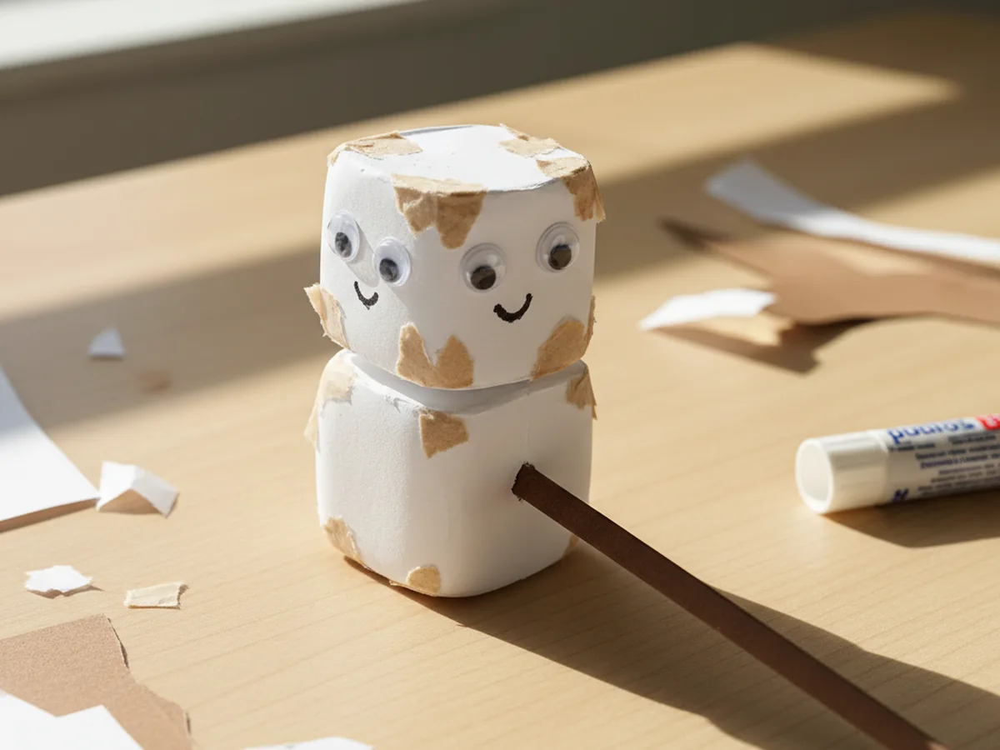
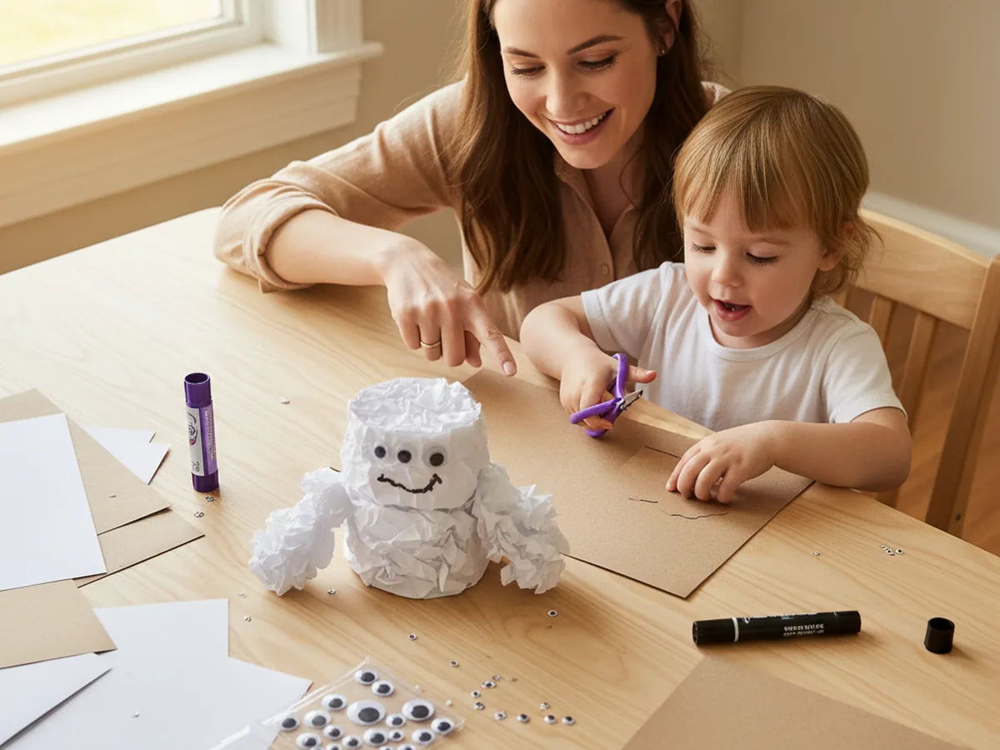
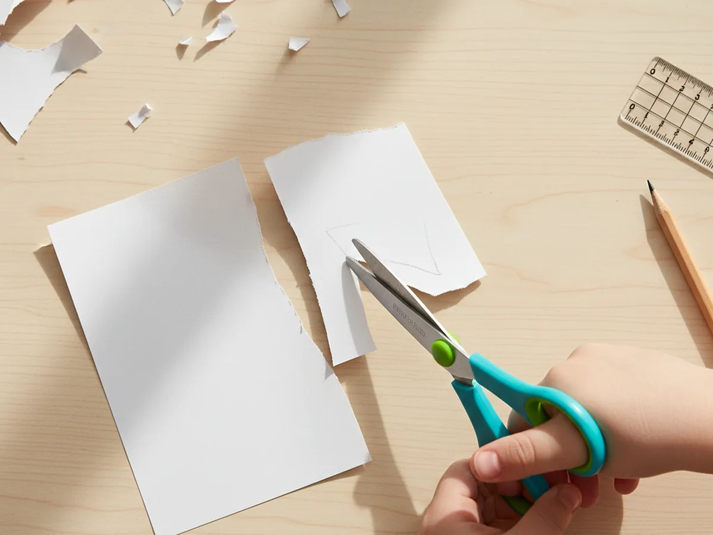
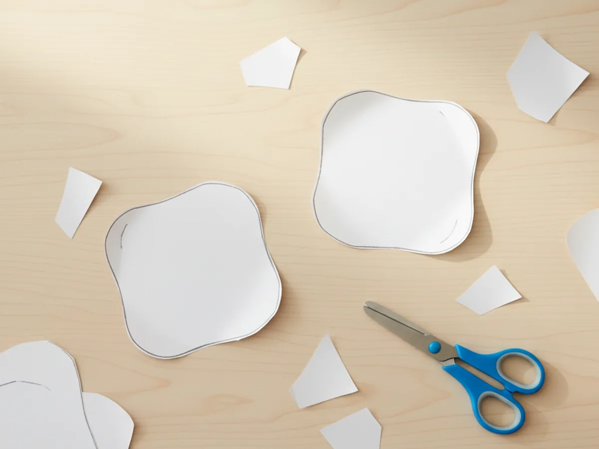
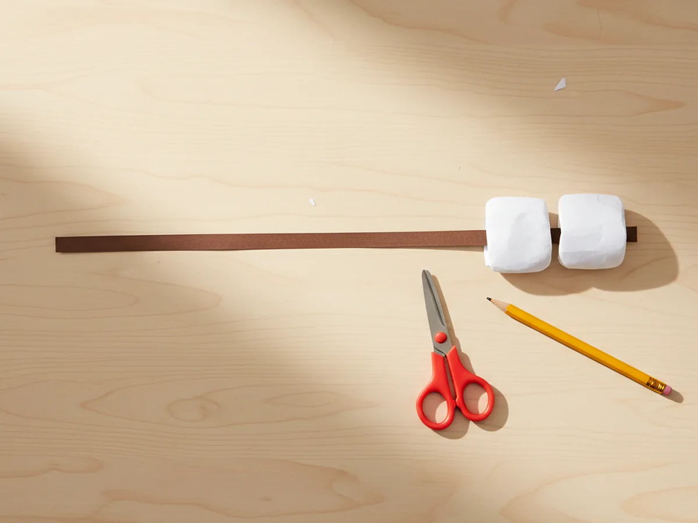
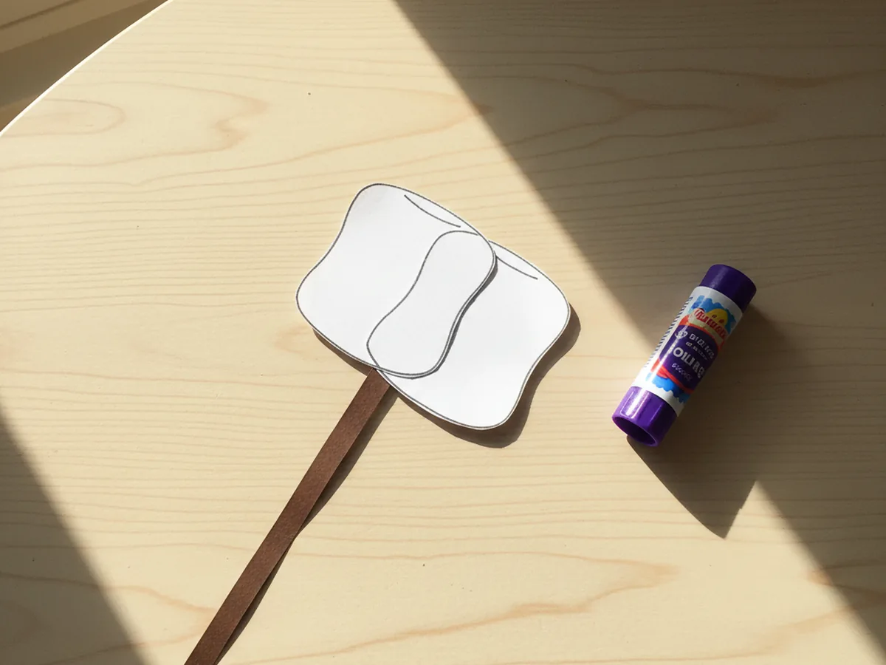
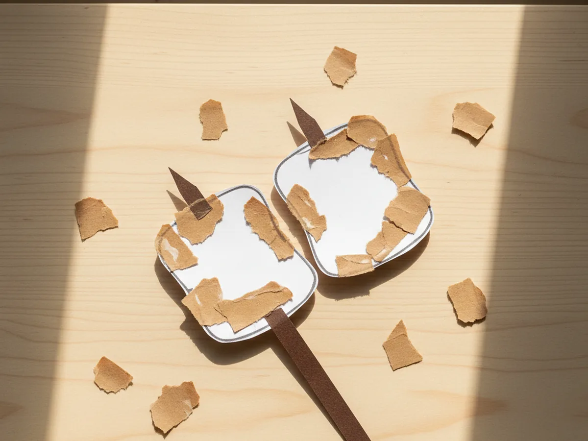
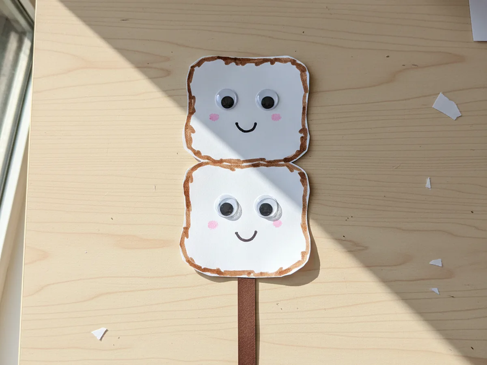

If your little one loves campfire stories and sweet treats, this marshmallow paper craft is going to be such a hit. It uses a few sheets of construction paper, takes about 25 minutes, and gives you the cutest little paper marshmallow on a stick with a tiny smiling face. There is no painting, very little mess, and a whole lot of happy smiles at the end. 🍡
Toddlers can help with the easy gluing and tearing parts, and bigger kids can do all the cutting and decorating on their own. Every finished version looks a little different, and that wobbly handmade charm is exactly what makes this paper marshmallow craft feel so special.
Why Kids Love This Craft
For kids, marshmallows already feel magical. They are puffy, sweet, and tied to fun memories like campfires, hot cocoa, and s'mores. Getting to make their very own paper version brings that cozy feeling right onto the craft table. Most children gasp a little when the two white shapes go on the stick and suddenly look exactly like a real marshmallow ready to roast.
This project is also wonderful for tiny hands. Cutting the soft rectangle shapes works on scissor control. Gently rounding the corners takes a little focus, which is great practice. And tearing the small toasted-edge pieces is one of those simple sensory tasks that toddlers genuinely adore. It looks like simple play, but real fine motor learning is happening the whole time.
Best of all, this simple marshmallow paper craft turns into a slow, screen-free moment together. You can pretend to roast the paper marshmallow over an imaginary fire, tell a silly campfire story, or make a whole little family of paper marshmallows in different shades. Those small side moments are usually the part children remember years later.

What You'll Need
Here is everything you will need to make this easy marshmallow paper craft at home. Lay everything out on the table before you start so the activity flows smoothly once your little one sits down.
- Crayola Construction Paper (240 sheets, assorted colors), you will need white, light brown, and dark brown sheets for this craft.
- Fiskars Training Scissors for Kids, spring-action and blunt-tipped, perfect for the soft marshmallow shapes.
- Elmer's Disappearing Purple Glue Sticks (30-pack), washable and easy for little hands to twist open.
- DECORA Self-Adhesive Googly Eyes (assorted sizes), two per marshmallow, peel and press.
- Crayola Washable Broad Line Markers, a black one is perfect for drawing the tiny smile.
- A pencil, for lightly tracing the marshmallow rectangles before cutting.
- A ruler, helpful for keeping the marshmallow shapes nice and even.
Step-by-Step Instructions
This marshmallow paper craft step by step is genuinely easy to follow. Take it one little step at a time and let your child do as much of the work as they comfortably can.
Step 1: Cut the Marshmallow Shapes
Start with a sheet of white construction paper. Use a pencil and a ruler to lightly draw two soft rectangles, each about three inches tall and four inches wide. These rectangles will become the puffy marshmallow shapes. Once they are drawn, have your child carefully cut along the lines. Slightly wobbly edges are totally fine and give the marshmallow paper craft a sweet handmade look.
For younger toddlers, pre-trace and even pre-cut the rectangles so they can save their cutting energy for the stick and the toasted edges later in the tutorial.

Step 2: Round the Corners
Now for the part that turns plain rectangles into squishy little marshmallows. Take each white rectangle and gently snip off the four sharp corners with small curved cuts. You only need to round each corner a little, about a quarter inch in. The shape should still look like a rectangle, just softer and puffier, like a real pillowy marshmallow.
Most kids light up the second they see the rectangles turn into marshmallow shapes. It is the moment the paper marshmallow starts looking like a real little treat.

Step 3: Cut the Roasting Stick
Grab a sheet of dark brown construction paper and cut a long thin strip, about eight inches long and half an inch wide. This will be the roasting stick that holds the marshmallow. If your child finds straight cuts tricky, draw two pencil lines for them to follow. A slightly uneven stick still looks great and feels more like a real twig from the backyard.
You can also cut a tiny bump on one end of the stick to make it look more like a real branch. That little detail is one of those small touches kids love.

Step 4: Glue the Marshmallows on the Stick
Now bring it all together. Lay the brown roasting stick flat on the table. Run a small line of glue across the top inch of the stick, then press the first white marshmallow firmly in place so the stick sits behind its center. Add a little more glue on top of that first marshmallow and press the second one on top, overlapping slightly so they look stacked. The two marshmallows should sit toward the top end of the stick.
When you take a step back, the marshmallow paper craft already looks like a real little roasting moment, even with no face yet. Most kids gasp a little here, and that is the magic moment of the whole project.

Step 5: Add the Toasted Edges
Tear small pieces of light brown construction paper, each about the size of a fingertip. Glue them softly around the edges and corners of each marshmallow to mimic the lightly toasted color of a real campfire marshmallow. Tearing instead of cutting gives the toasted bits a soft uneven look that feels much more realistic. Let your child go as wild or as gentle as they want with the toasting.
This step is honestly one of the most fun parts. Tearing paper has a soothing, sensory quality that little hands genuinely enjoy. 🔥

Step 6: Add the Face and Final Details
Time for the finishing touches. Peel the backing off four self-adhesive googly eyes and have your child press two onto each marshmallow, near the top half. Then use a black washable marker to draw a tiny curved smile under the eyes on each one. A small dot of pink marker on the cheeks is optional, but it adds extra cuteness.
Once the marshmallow paper craft is fully finished, hold it up in front of your child and pretend to roast it over an imaginary campfire together. Most kids burst into giggles right then, and that is exactly the moment this whole project is for. 💛

Variations to Try
S'mores Paper Craft: Add a small light brown rectangle for a graham cracker on each side of the marshmallow stack, plus a thin dark brown chocolate square between them. Skip the stick and let the whole thing sit flat for a classic s'mores look. This version is wonderful for hanging on the fridge.
Hot Cocoa Mug Version: Skip the roasting stick and glue the two marshmallow shapes onto the top of a brown paper mug shape with a curved handle. Add a few thin paper strips of steam at the top. The craft instantly becomes a cozy winter hot chocolate scene.
Campfire Scene: Add an orange and yellow torn paper flame at the bottom of the stick, and glue the whole thing onto a black paper background with a few small white star shapes. The marshmallow now looks like it is really roasting at night, perfect for a summer evening craft session.
Final Thoughts
This marshmallow paper craft tutorial is one of those projects that feels almost too simple for how charming the finished result turns out. It uses a handful of basic supplies, takes about 25 minutes, and leaves you with the kind of little keepsake a child runs to show off to anyone who walks through the door. More than that, it gives both of you a slow, joyful moment of making something together. 🎨
If your little one makes their own paper marshmallow, I would love to see it. Pin this tutorial on Pinterest so other craft-loving mamas can find it easily. Happy crafting!
More Crafts You'll Love
If your little one enjoyed this marshmallow paper craft, they will adore these other fun food-themed paper crafts too: